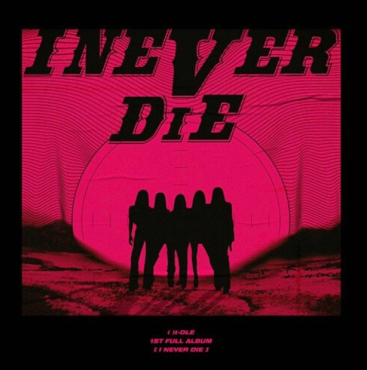

- 윤하 - 종이비행기
- (여자)아이들 - TOMBOY
- 비오 - 네가 없는밤
- 헤이즈 - 비가 오는 날엔
(여자)아이들 - TOMBOY

(여자)아이들의 TOMBOY는 그룹 내에 첫 정규 앨범 대표곡으로 아이들의 리더 전소연이 직접
작사 작곡 한 노래다. 이 노래는 그룹 내 메인댄서였던 '서수진' 탈퇴 후 공백기를 겪고 나온 노래로
사람들의 관심을 힘 입어 크게 성공한 노래다. 장르는 록/메탈/댄스/힙합/랩 으로 다양한 장르를 통해
관중들의 눈과 귀를 즐겁게 해주는 노래다.